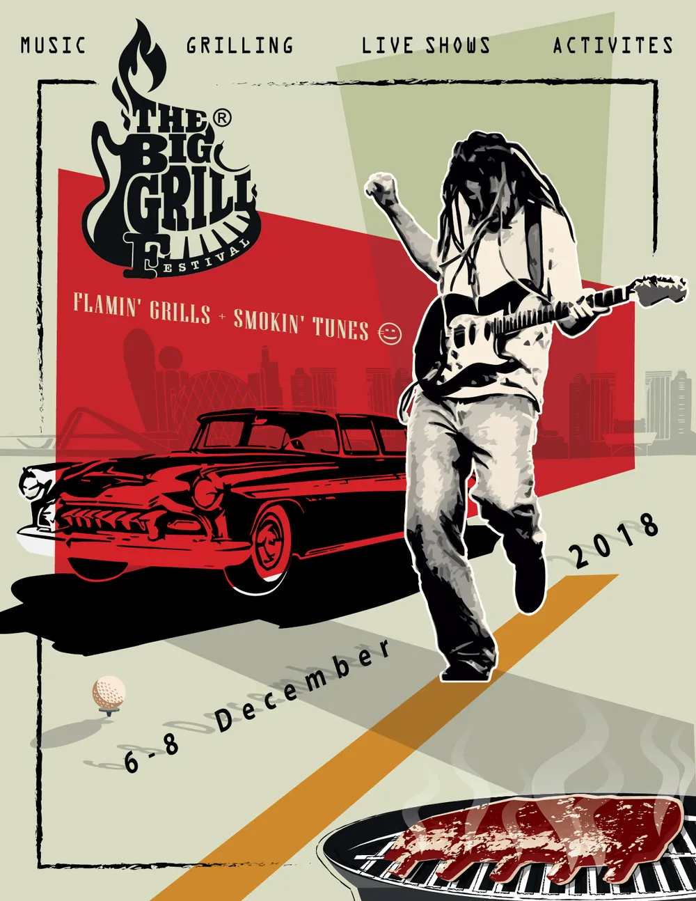
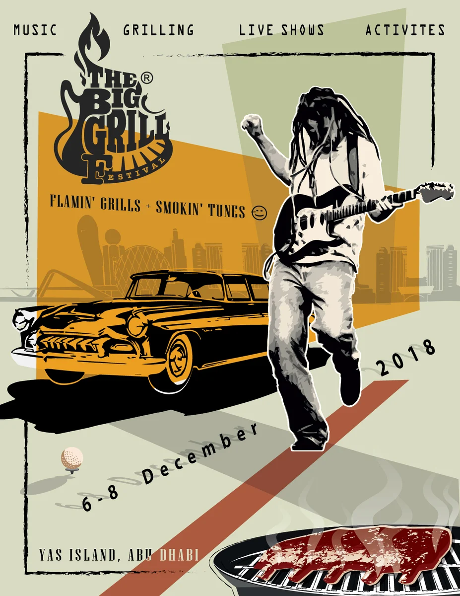
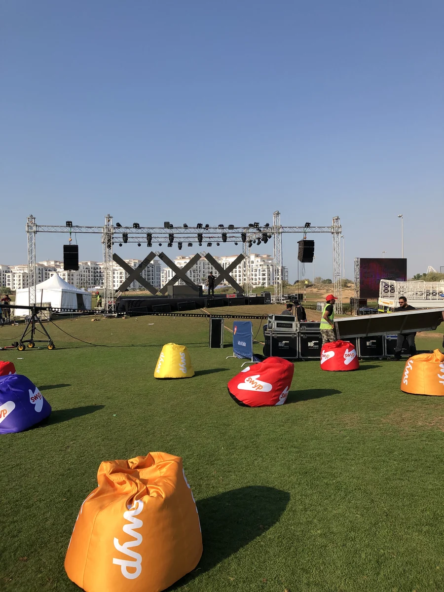
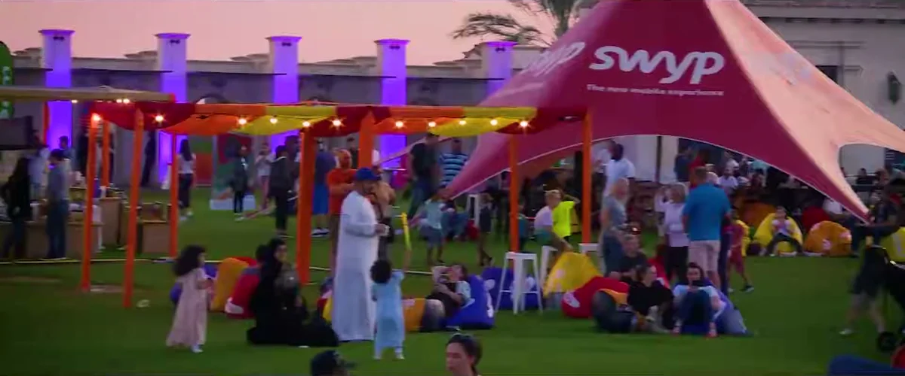
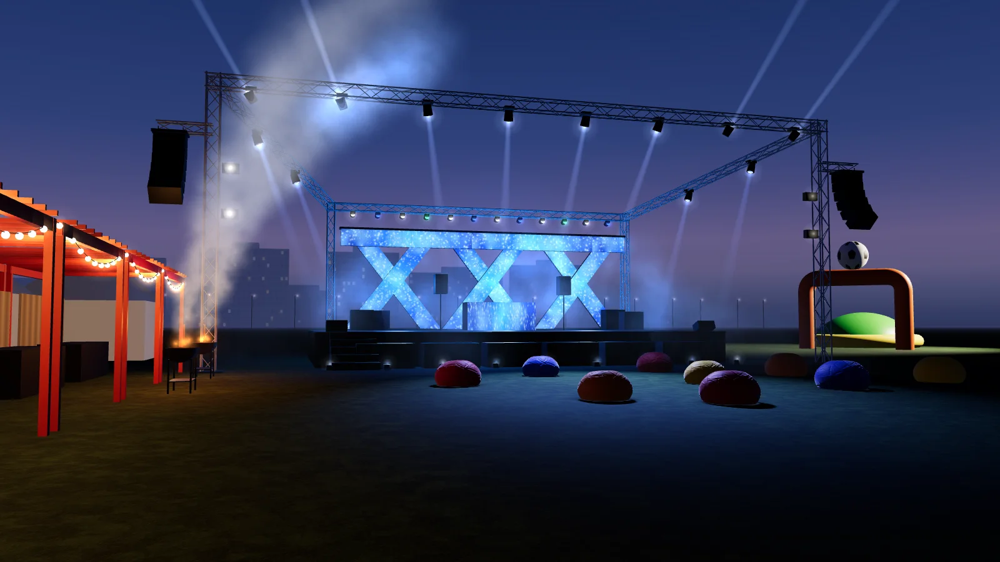
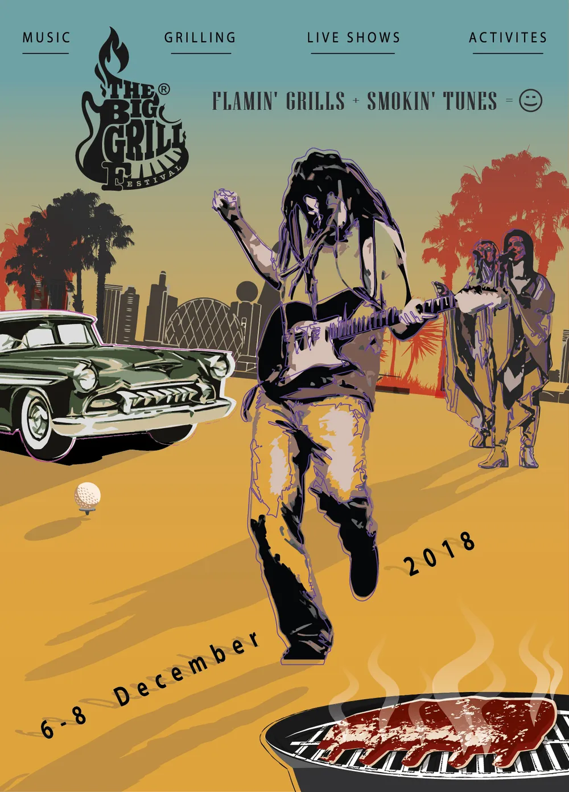
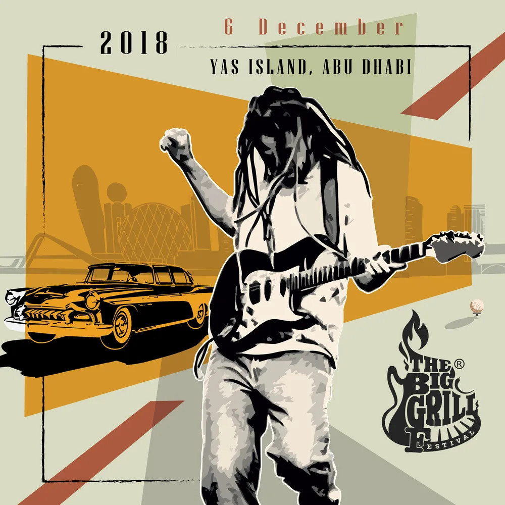
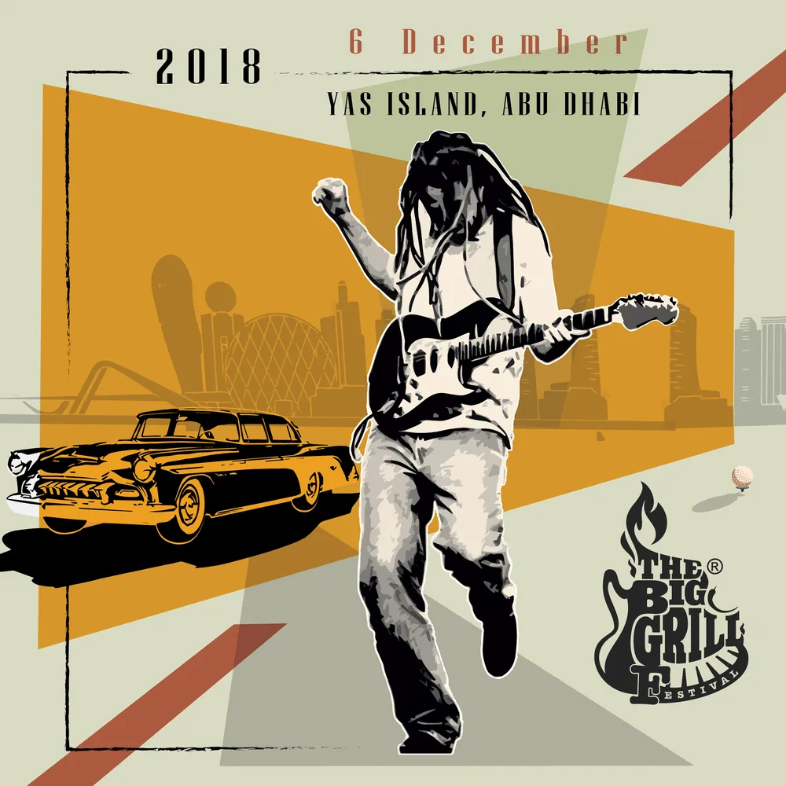
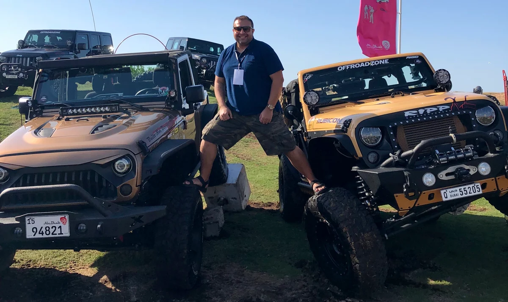
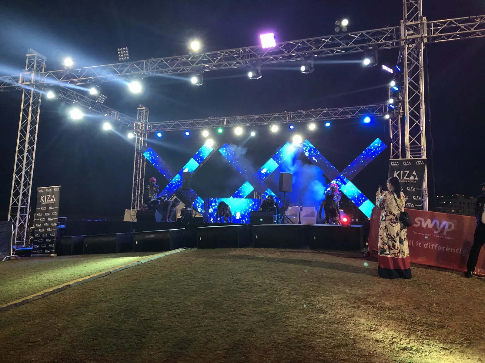

Yas Links · Abu Dhabi · December 2018
The Big
Grill.
Flamin’ grills.
Smokin’ tunes.
The whole weekend in one drawing. Original festival poster by Antoni Gerges, through AntBrush, with MCX.
From the drawing to the festival ↓
The festival film.
A family festival. Flamin’ grills + smokin’ tunes.Antoni Gerges, Creative Director, Brand & Experiential · AntBrush, with MCX
A whole weekend of food and music, captured in one drawing.
Read more
The Big Grill was one of the two events of Abu Dhabi Food Festival 2018, on its opening weekend. I designed the poster and led the creative direction through AntBrush; with MCX, we brought that visual world into the festival at Yas Links. The event was ours: owned, produced and organized with MCX, and everything managed: the sponsors, the production, the artists, the campaign, the AV.
The festivalThe Big Grill Festival, 6 to 8 December 2018, on the lawn of the Yas Links golf club on Yas Island, Abu Dhabi. A family festival, free to all, from noon to 11 pm, with a kids’ zone on the lawn. Organised by MCX and presented by SWYP.
Its theme was “Grillin’ ’n’ Chillin’”: restaurants and steakhouses at the grills, and music on the lawn. Big Mountain, Abbamania, Abri & Funk Radius and KIZA played.
As Partner, Creative Director & Co-producer at MCX, through AntBrush, I helped originate and deliver the festival. I designed two poster routes; the team carried the visual system into the event.
The Big Grill logo belongs to the festival.
The poster’s own line: “Flamin’ grills + smokin’ tunes = ☺”. Food and music as one weekend, said in one drawing: a guitarist for the tunes, a grill with its smoke, a classic car for the cars on show, a golf ball on its tee for the links, and the city behind.
Everything in the drawing runs on one slant: the date, the shadows, the stripe.
The first is painted: a sky from teal to ochre, palms and a skyline. The second is cut harder: three wedges and a stripe on a pale ground, inside a frame drawn by hand. It went out in red and in ochre, tall and square.
The same wedge, car and grill stood on the boards at the way in.
Both routes are my Illustrator files of 18 July 2018. The exported posters add a tagline and a place line that the working files do not have.
The lawn in 3D is a model made for this portfolio, from my photographs of 6 December 2018 and the festival film. Sizes are estimates. The stalls, the kids’ zone and the beanbags are placed as the film shows them. The lit beam across the top of the three X’s is added in the model; the stage as built had three free-standing X’s.
The festival film is by MCX, from its own channel. The film and the photograph of the stage on the first night are my own, taken on my phone on 6 December 2018.
What we delivered.
Ours: owned, produced and organized, with MCX
- Building the whole venue from nothing on the open ground: Stage X and its screens, the grills, the tents and pergolas, the lawn set-up
- The stage, sound, light and screens: AV production
- The set-up and the logistics
- Ticketing and sponsorship
- The running order and the days themselves
Campaign & print
- Key visual and posters, two routes, hand-drawn
- For SWYP: bridge banners on the Yas highway and towards Salam Street
- Foam boards and a billboard at Yas Links
Digital & radio
- Social and paid digital campaign, with a competition
- Ticketing on Platinumlist; vendor recruitment
- SMS in two phases; radio, 25 November to 8 December
Space
- Stage X and the festival build
Poster, red route 
Poster, ochre route 
Stage X on the lawn, by day 
The lawn at dusk, the festival open
From the job register, the project mail, the artwork files and Tony’s photographs.
The way in.
The wedge, the car and the grill, on the boards at the gate.Festival film · MCX · at 0:00
Families on the lawn.
A golf links, for one weekend: beanbags, prams and the kids’ zone.Festival film · MCX · at 0:49
The grills.
Flamin’, as the poster said.Festival film · MCX · at 0:40
The tunes.
A band on the stage at night.Festival film · MCX · at 1:42
Smokin’.
A guitarist on the poster. A full stage at night.Festival film · MCX · at 1:55
The stage.
The first night, from the lawn.My own film · 6 December 2018, 9:19 pm

01 · The lawn · noon to night 3D model · made for this portfolio · from my photographs of 6 December 2018A family festival, from the grills at noon
to the stage at night.
Noon to 11 pm, three free days on the lawn at Yas Links.
The grills first.
Doors open at noon. Food stalls down one side of the lawn, the kids’ zone by the stage.
The stage lights up.
The sun goes down behind the stage, and the smoke from the grills drifts into the lights.
Music on the lawn.
Big Mountain, Abbamania, Abri & Funk Radius and KIZA, for families on beanbags.
Flamin’ grills +
smokin’ tunes.
Two routes. The second in red and in ochre, tall and square.



Built, and stood on.
The off-road zone
Three days.
Ours, within Abu Dhabi Food Festival 2018: from the first drawing to the last act.
03 · The resultSources: the organiser’s release, Dubai Chronicle, 18 October 2018 · Department of Culture and Tourism Abu Dhabi, 13 December 2018.

More figures
The acts: MCX’s own description of the film. The last hour: The National, 15 December 2018.
Creative Director, Brand & Experiential
Festival film: MCX.